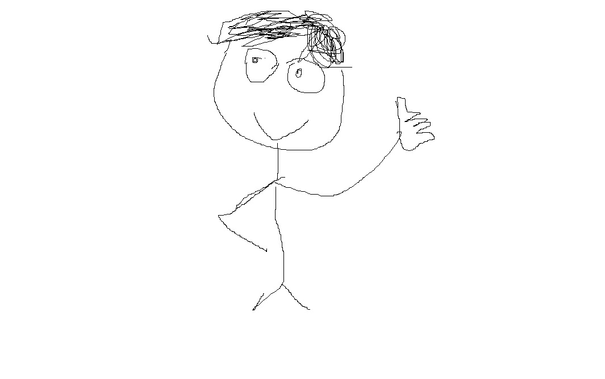

Ricardo OLIVEIRA ABRANTES
Présentation
Je m'appelle Ricardo OLIVEIRA ABRANTES, j'ai 17 ans et je suis un élève de première au lycée Saint-Exupéry de Fameck passionné par l'informatique. L'objectif de ce site est de vous montrer à la fois mes énormes compétences en web (modeste) mais aussi un peu mes projets personnels et un peu de ma vie. Je serais donc très ravis si mon professeur préféré M.Enclos me mettrait un 20 aprés avoir observer ce magnifique site web réaliser avec patience et délicatesse par son meilleur élève.
Les langages étudiés
- HTML
- CSS
- JavaScript
- PHP
- Python
Mes compétences
- Intelligence incalculable
- Beauté démesurée
- Pouvoir de dissuasion
Langues parlées
- Français
- Portugais
- Anglais